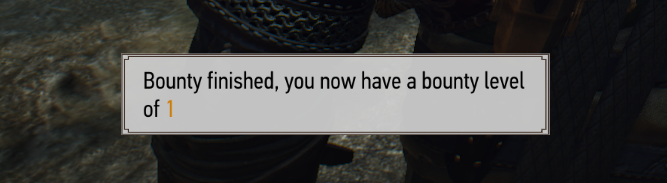

Everything you need to know about RER.Back to summary.
Bounties from the mod consist in a series of targets you must kill. These targets can be anywhere around the world, but mostly around various point of interests. Completing a bounty increases your bounty level, which controls the overall difficulty of the bounties but the rewards as well.
It all starts with the bounty master, the only way to get a bounty is to talk to him. He travels the world and visits all the regions of the game, he may also move from time to time. To easily find him, he is always marked on your map by a yellow quest giver icon surrounded by a white circle.
The bounty master offers other services too, he buys your RER trophies at a price no other merchant can compete with. He also trades tokens of gratitude which you may have earned from completing RER contracts for valuable items.
Bounties always consist of a main target, and optionally a variable amount of side targets. Your main objective is to kill the main target, once killed the bounty is over even if side targets are still alive.
Slaying a side targets will increase the rewards you will get from the bounty by 100%, but it will also cause your fight against the main target to be more complicated. It is up to you to increase the rewards until you can't fight anymore.
Each region (White Orchard, Velen, Skellige, Toussaint, and new maps from other mods) have their own bounty level.  Whenever you gain a bounty level, you are given a reward. Every few levels result in a rarer, more valuable reward. Some of them are unique items you can only obtain from completing quests.